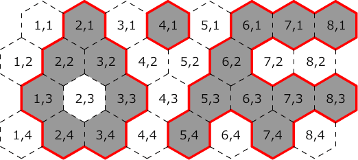

| 第11回日本情報オリンピック 予選５ |
|
|
2011年12月18日
情報オリンピック日本委員会
|
JOI 社の建物は図のような 1 辺 1 メートルの正六角形をつなぎ合わせた形である．クリスマスが近づいているので，JOI 社では建物の壁面をイルミネーションで飾り付けることにした．ただし，外から見えない部分にイルミネーションを施すのは無駄なので，イルミネーションは外から建物の中を通らずに行くことのできる壁面にのみ飾り付けることにした．

図: JOI 社の建物の配置の例
上の図は上空から見た JOI 社の建物の配置の例である．正六角形内の数字は座標を表す．灰色の正六角形は建物がある場所を表し，白色の正六角形は建物がない場所を表す．この例では，赤の実線で示される部分がイルミネーションで飾り付けを行う壁面となり，その壁面の長さの合計は 64 メートルとなる．
JOI 社の建物の配置を表す地図が与えられたとき，飾り付けを行う壁面の長さの合計を求めるプログラムを作成せよ．ただし，地図の外側は自由に行き来できるものとし，隣接した建物の間は通ることはできないものとする．
入力ファイルの 1 行目には 2 つの整数 W, H (1 ≦ W ≦ 100，1 ≦ H ≦ 100) が空白を区切りとして書かれている．続く H 行には JOI 社の建物の配置が書かれている．i + 1 行目 (1 ≦ i ≦ H) には W 個の整数が空白を区切りとして書かれており，j 個目 (1 ≦ j ≦ W) の整数は座標 (j, i) の正六角形に建物がある時は 1 であり，ない時は 0 である．また，与えられる入力データには建物が必ず 1 つ以上ある．
イルミネーションで飾り付けを行う壁面の長さの合計を 1 行で出力せよ．
| 入力例 1 | 入力例 2 |
|---|---|
8 4 0 1 0 1 0 1 1 1 0 1 1 0 0 1 0 0 1 0 1 0 1 1 1 1 0 1 1 0 1 0 1 0 |
8 5 0 1 1 1 0 1 1 1 0 1 0 0 1 1 0 0 1 0 0 1 1 1 1 1 0 1 0 1 1 0 1 0 0 1 1 0 1 1 0 0 |
| 出力例 1 | 出力例 2 |
64 |
56 |
入出力例 1 は問題文中の例に対応しており，イルミネーションで飾り付けを行う壁面の長さの合計は 64 メートルである．
※各入出力例のデータは， 右クリック等によりファイルに保存して利用可能です．